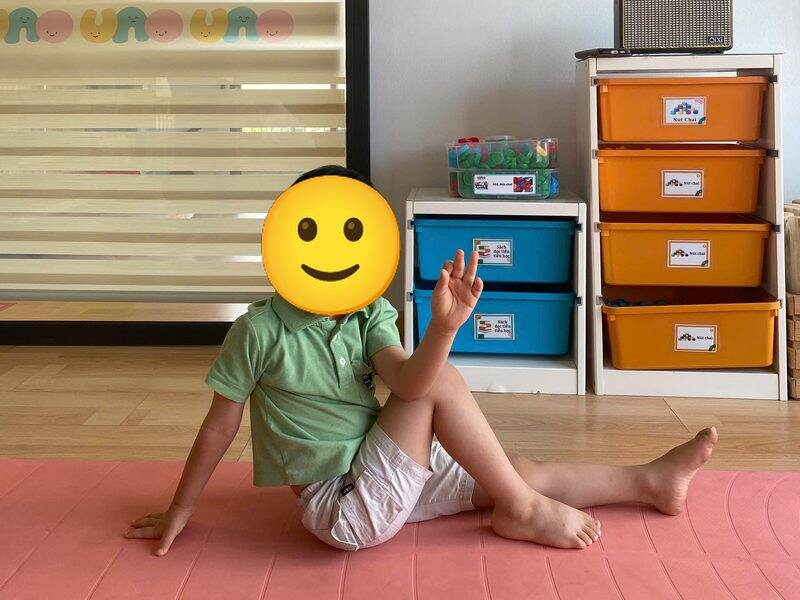
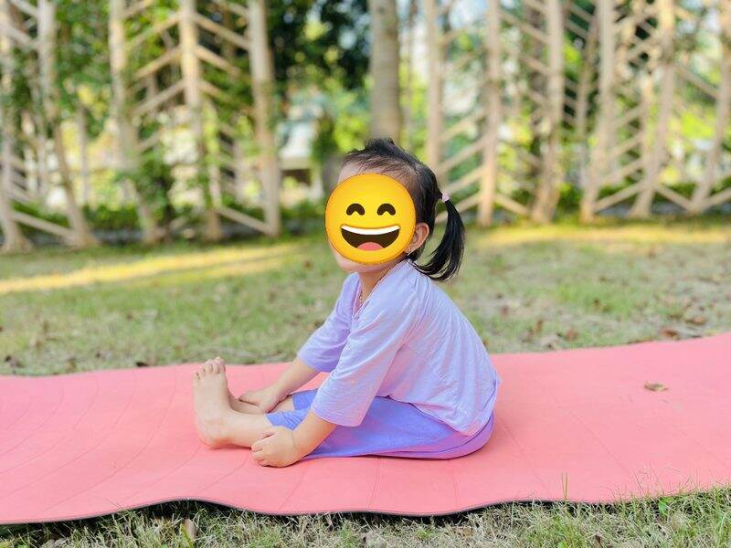
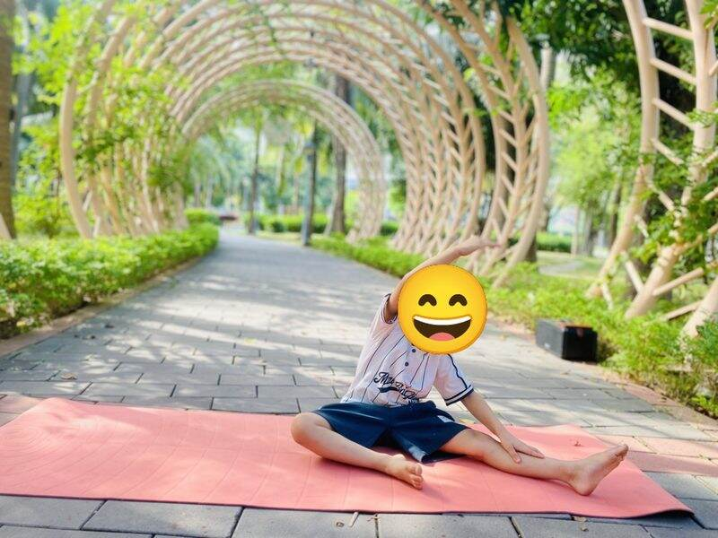
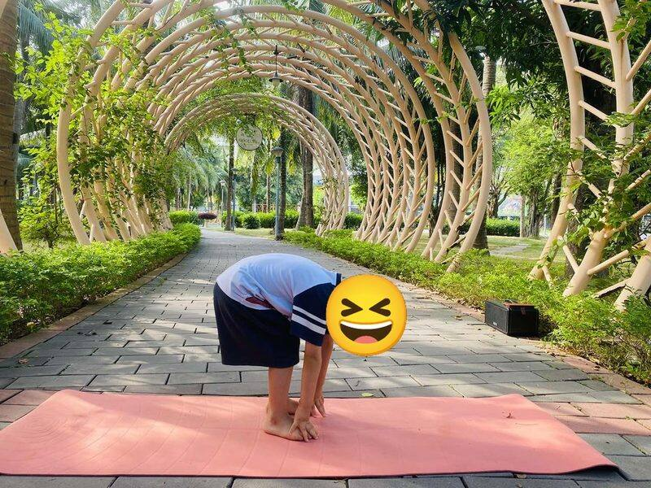

Chủ đề 15 · Vu Lan báo hiếu
Chim Sẻ Con và bông hồng cài áo
🌟 Bài học trong câu chuyện
Giới luật yoga: Ishvara Pranidhana – Biết ơn và tin tưởng. Bé biết nói lời cảm ơn và tin vào những điều tốt đẹp.
Kỹ năng sống: Hiếu thảo, nhớ ơn ông bà cha mẹ.
1. Khởi động (2 phút)
Cả lớp ngồi xếp bằng thành vòng tròn. Cùng thở 3 hơi thở bông hoa: hít vào bằng mũi như ngửi hoa, thở ra bằng miệng thật chậm. Chắp tay trước ngực và chào nhau: “Namaste, chào các bạn!”
2. Kể chuyện và tập (10 phút)
Rằm tháng Bảy là mùa Vu Lan, mùa nhớ ơn cha mẹ, ông bà. Chim Sẻ Con được bà kể về bông hồng cài áo.
-
 1
1Bông hồng cài áo
🧘 Tư thế Ngồi xếp bằng (Easy Pose)
Bà kể: "Ngày Vu Lan, ai còn mẹ được cài bông hồng đỏ". Mình ngồi chắp tay trước ngực.
Cách làm: Ngồi xếp bằng, lưng thẳng, hai tay đặt nhẹ trên đầu gối. Giữ 3 đến 5 nhịp thở.
-
2
Hoa sen
🧘 Tư thế Hoa sen (Lotus)
Trong chùa, hoa sen nở thơm ngát. Mình làm bông sen.
Cách làm: Ngồi xếp bằng, hai cổ tay chạm nhau trước ngực, các ngón tay xòe ra như cánh hoa. Giữ 3 đến 5 nhịp thở.
-
🐦3
Chim sẻ con thương mẹ
🧘 Tư thế Em bé (Child's Pose)
Sẻ Con nhớ những đêm mẹ ủ ấm mình trong tổ. Mình cuộn tròn như chim non trong tổ.
Cách làm: Quỳ gối, ngồi lên gót chân, cúi người cho trán chạm thảm, hai tay duỗi ra trước hoặc để xuôi bên người. Giữ 3 đến 5 nhịp thở.
-
🌸4
Ngọn nến lung linh
🧘 Tư thế Chân lên tường (Legs up the Wall)
Mọi người thắp nến cầu chúc cho ông bà cha mẹ. Mình làm ngọn nến.
Cách làm: Nằm ngửa, đưa hai chân thẳng lên trời (dựa vào tường nếu có), tay thả bên người. Giữ 3 đến 5 nhịp thở.
-

5Chuông chùa
🧘 Tư thế Ngồi xoay người (Seated Twist)
"Boong... boong..." chuông chùa ngân nga. Mình xoay người thật chậm.
Cách làm: Ngồi xếp bằng, một tay đặt lên gối đối diện, tay kia chống phía sau, xoay người nhìn ra sau. Đổi bên. Giữ 3 đến 5 nhịp thở.
-

6Đèn hoa đăng trôi sông
🧘 Tư thế Con thuyền (Boat)
Đèn hoa đăng trôi trên sông. Mình làm con thuyền nhỏ chở đèn.
Cách làm: Ngồi, co gối, ngả người ra sau một chút, nhấc hai chân lên, tay duỗi ra trước. Giữ 3 đến 5 nhịp thở.
-

7Trăng rằm tháng bảy
🧘 Tư thế Trăng lưỡi liềm (Crescent Moon)
Trăng sáng soi đường về nhà. Mình nghiêng người làm vầng trăng.
Cách làm: Đứng thẳng, hai tay chụm trên đầu, nghiêng người sang một bên như vầng trăng khuyết. Đổi bên. Giữ 3 đến 5 nhịp thở.
-
 8
8Cây ơn nghĩa
🧘 Tư thế Cái cây (Tree)
Bà nói: "Ăn quả nhớ kẻ trồng cây". Mình làm cây thật vững.
Cách làm: Đứng một chân, bàn chân kia đặt vào bắp chân hoặc đùi (không đặt lên đầu gối), hai tay chắp trước ngực hoặc vươn cao. Giữ 3 đến 5 nhịp thở.
-
 9
9Con cò bé bé
🧘 Tư thế Hồng hạc (Flamingo)
Sẻ Con hát bài "Con cò bé bé" tặng mẹ. Mình đứng một chân như cò.
Cách làm: Đứng một chân, co chân kia lên, hai tay dang như cánh chim. Giữ 3 đến 5 nhịp thở.
-

10Cúi đầu cảm ơn cha mẹ
🧘 Tư thế Gập người đứng (Forward Fold)
Sẻ Con cúi đầu: "Con cảm ơn bố mẹ, ông bà". Lòng Sẻ ấm áp.
Cách làm: Đứng, gối hơi chùng, cúi gập người, hai tay buông thả xuống sàn. Giữ 3 đến 5 nhịp thở.
3. Thư giãn (2 phút)
Các con nằm ngửa, tay chân thả lỏng, nhắm mắt lại. Cô nói nhẹ: “Hít vào thật chậm… thở ra thật chậm… Con nhớ lại câu chuyện vừa rồi, nhớ người bạn mình thích nhất trong truyện. Cơ thể con mềm như bông, nhẹ như mây.” Sau đó các con nghiêng người, từ từ ngồi dậy.
4. Trò chuyện cùng bé (1 phút)
Sẻ Con nhớ ơn ông bà cha mẹ và nói lời cảm ơn. Lòng biết ơn là Ishvara Pranidhana.
Cô hỏi các con:
- Con muốn cảm ơn ai trong gia đình?
- Con làm gì để bố mẹ vui?
Kết thúc bằng lời chào “Namaste” và một nụ cười.
Lưu ý cho thầy cô và bố mẹ: Tập trên thảm, không tập ngay sau khi ăn no. Bé chỉ làm tới mức thấy dễ chịu, không ép bé. Tư thế đứng một chân có thể cho bé vịn tường hoặc vịn tay người lớn.